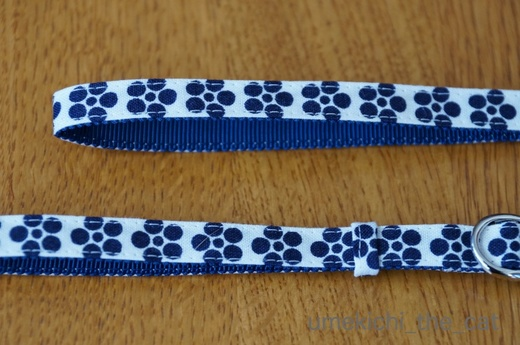
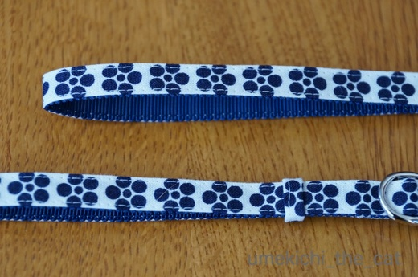
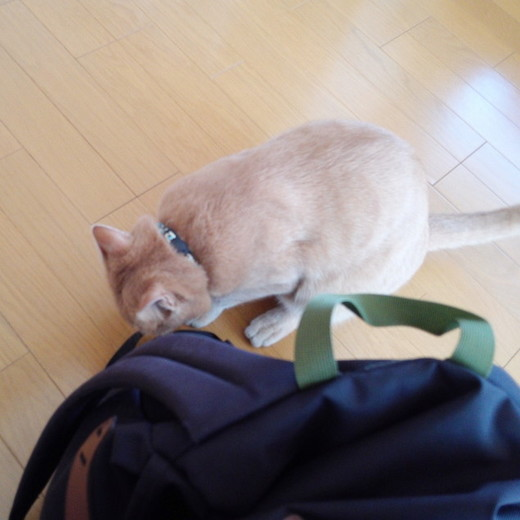
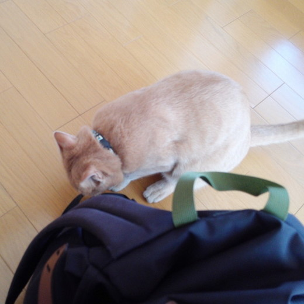

猫のいる家の年末の風物詩（なのか！？） [梅吉]
12月も中旬。
大掃除、はしませんが中掃除らしきものをぼちぼちしております。
先日はキッチンの棚の中の掃除。
ごそごそしていると「あのお方」が当然やって来ます。

そこに見えるカフェオレ色の物体は一体なんでしょうか？

![[猫]](https://blog.ss-blog.jp/_images_e/101.gif) あいてたから はいってみたで
あいてたから はいってみたで

そうじぐあいも ちぇっくせなあかんねんで

ここもええかんじや

わしのす（冷蔵庫の上）へのあくせすも ばつぐんや
うえのだん はどうやろか
ここも ええかんじや
もひとつうえは どないやろか
そこの隙間は掃除しました。
お好きなだけ楽しんでくださいね〜＾＾
去年もいろいろお手伝いしてもらいましたが
今年も色々、やる気満々の梅吉さんでしたー。
で、梅吉がやる気満々になるとぜんっぜん掃除が進まない・・・
 ↑ガブッと一押し↑
↑ガブッと一押し↑
大掃除、はしませんが中掃除らしきものをぼちぼちしております。
先日はキッチンの棚の中の掃除。
ごそごそしていると「あのお方」が当然やって来ます。

そこに見えるカフェオレ色の物体は一体なんでしょうか？


そこの隙間は掃除しました。
お好きなだけ楽しんでくださいね〜＾＾
去年もいろいろお手伝いしてもらいましたが
今年も色々、やる気満々の梅吉さんでしたー。
で、梅吉がやる気満々になるとぜんっぜん掃除が進まない・・・
猫スイッチ、オン！ [梅吉]

野性のかけらもなくタオルをちゅうちゅうしていたかと思えば

突然入る猫スイッチ。
ばびゅ〜〜んっ！
突進しすぎーー！！

梅吉さんが狙っているのはこのいわゆる典型的な猫じゃらし。
にゃんこのいるお宅なら一家に一本お持ちではないでしょうか。
梅吉さんご愛用のが壊れたので新しいのを買ってきたら猫スイッチオン(・o・)

うさぎの毛使用とのことなので新品はかすかに動物臭でもするのでしょうか・・・

鼻にしわ寄せてがぶり付いておりますw

野性がもどってきましたか？
獲物をカミカミしている様でちょっとコワイ・・・(⌒_⌒;
渡してしまうと飲み込んでしまいそうなので適度なところで回収。

カサカサとビニール袋を絡めて遊ぶのがまたよろしい様です＾＾
お目目がキロキロしていますねーＯ(≧▽≦)Ｏ

運動不足にならない様にいっぱい走ってくださいよ♡
寒くなっても水回りが好き [梅吉]
グッと気温も下がってきましたね。
最近の梅吉さんは
こんなふうに毛布に潜り込んでいるか（若干白目気味です）
温い冷蔵庫の上でポーズなんてキメちゃっていることが多いのですが
大好きな水回りのチェックも欠かしていません。
先日は・・・・・
残り湯の中にダイブΣ(ﾟ◇ﾟ；)
濡れて足だけミョーに細くなっているのがお分かりになりますか？
わしになにがおきたんやろか・・・
はよわすれとこ・・・
ポチャッでもバシャッでもなく「ドッボーーーーーン」と音がしたので駆けつけると
やっちまった・・・・という顔をして4本の足をお湯の中につけて立ってました(≧ω≦｡)
急いでカメラを構えた時にはすでにお湯から上がってしまった後でしたけどw
ふふっ わしとしたことが（照れ）
元気一杯も良いですが無茶して怪我したり風邪ひかないでくださいよー。
アイシア 極楽ねこカレンダーが届きました。

白黒なんです。ちょっと残念！！
梅吉は1月17日でした。
こいつぁ春から縁起が良いわい![[グッド（上向き矢印）]](https://blog.ss-blog.jp/_images_e/145.gif)
↑ガブッと一押し↑
最近の梅吉さんは
こんなふうに毛布に潜り込んでいるか（若干白目気味です）
温い冷蔵庫の上でポーズなんてキメちゃっていることが多いのですが
大好きな水回りのチェックも欠かしていません。
先日は・・・・・
残り湯の中にダイブΣ(ﾟ◇ﾟ；)
濡れて足だけミョーに細くなっているのがお分かりになりますか？
ポチャッでもバシャッでもなく「ドッボーーーーーン」と音がしたので駆けつけると
やっちまった・・・・という顔をして4本の足をお湯の中につけて立ってました(≧ω≦｡)
急いでカメラを構えた時にはすでにお湯から上がってしまった後でしたけどw
元気一杯も良いですが無茶して怪我したり風邪ひかないでくださいよー。
アイシア 極楽ねこカレンダーが届きました。

白黒なんです。ちょっと残念！！
梅吉は1月17日でした。
こいつぁ春から縁起が良いわい
でろでろキャンディー [梅吉]


梅柄の首輪が出来ました。天橋立・伊根・舞鶴ー後半ー [梅吉]
梅吉の新しい首輪が届きました。
注文してから一ヶ月。待ち遠しかったー！

じゃ〜ん![[ぴかぴか（新しい）]](https://blog.ss-blog.jp/_images_e/150.gif)

梅柄なのです。
たっくさんのデザインがあったのですが迷うことなく決めました。
上に写っているのは共布で出来た携帯ストラップです。
首輪表には梅吉の名前と連絡先。
迷いに迷ったペットのおうちのID番号は
首輪の裏面に入れることに。
wwwで始まるHPアドレスだと文字数オーバーな上アルファベットは潰れて見えにくい・・・
と作り手の方から指摘があったのでこうしました。
HPのアドレスだってわかってもらえますよね？

さっそく首輪をつけて記念撮影。お似合いですよＯ(≧▽≦)Ｏ
今回は目線をいただかなくても大丈夫ですよ。
首輪が見えなくなっちゃいますから(^▽^;)
首輪を作っている方はテレビの戦隊ヒーローのベルトを手がけていたそうです。
柔らかい首輪でとっても軽い！大満足の仕上がりでした。
この首輪をしたからもう安心、ではありませんが万が一迷子になっても
ちゃんと戻ってこられる可能性は少しは高くなったかな？
↑ガブッと一押し↑
注文してから一ヶ月。待ち遠しかったー！

じゃ〜ん

梅柄なのです。
たっくさんのデザインがあったのですが迷うことなく決めました。
上に写っているのは共布で出来た携帯ストラップです。
首輪表には梅吉の名前と連絡先。
迷いに迷ったペットのおうちのID番号は
首輪の裏面に入れることに。
wwwで始まるHPアドレスだと文字数オーバーな上アルファベットは潰れて見えにくい・・・
と作り手の方から指摘があったのでこうしました。
HPのアドレスだってわかってもらえますよね？

さっそく首輪をつけて記念撮影。お似合いですよＯ(≧▽≦)Ｏ
今回は目線をいただかなくても大丈夫ですよ。
首輪が見えなくなっちゃいますから(^▽^;)
首輪を作っている方はテレビの戦隊ヒーローのベルトを手がけていたそうです。
柔らかい首輪でとっても軽い！大満足の仕上がりでした。
この首輪をしたからもう安心、ではありませんが万が一迷子になっても
ちゃんと戻ってこられる可能性は少しは高くなったかな？
お留守番2日目と天橋立・伊根・舞鶴ー前半ー [梅吉]
朝ごはんを食べている時に送られて来たシッターさんからのメール。

お留守番1日目と同じ写真ではありませんw
「おお！今朝も元気にがぶりついているねー！！」と安堵しつつ報告メールを読みました。
以下シッターさんメールの抜粋です。
「今朝もお伺いした瞬間はスリ〜としてくれましたが、
次第に鼻息が荒くなり靴を脱いだら足の甲をガブリ。
トイレ掃除、ベランダの水やり、お湯が沸いたら湯たんぽの交換をパパっと終わらせて、
あとは梅吉くんと過ごしました。
と言ってもごはんを食べるか私に立ち向かって来るかでしたが^^;」


ごはんをもらうときはカメラ目線でスリスリ。ごはんをバクバク。

水やりをしにベランダに出たシッターさんの後追いもしてたみいです^^;
まずは元気で何より！と安心して２日目の旅行を楽しみました。
予定より早い19時ごろ帰宅すると玄関にはすでに梅吉の気配。
鍵を開けるとお出迎えしてくれましたーＯ(≧▽≦)Ｏ
先日のブログ記事にzombiekongさんから「帰って来たらすごく甘えたんじゃないですか?」と
コメントをいただいたのですが・・・
梅吉は甘えるというよりも私たちの後をついてとにかく走り回ります。
喜んでいるのは間違い無いんですが行動が意味不明。
おもちゃをくわえたかと思えば人をロイター板がわりにして高いところに飛び乗る。
お風呂の準備をしようとすればバスタブに（空です）にダイブ。
ベッドメイクしていると布団に飛び乗ってくる・・・・
北海道弁でこういう状態を「おだつ」って言うんですが、まさにおだってる見本。
（おだつ＝へんなテンションではしゃぎまくる、かな？）
先代猫は留守番させて帰ってくると２〜３時間姿を見せない子だったので
梅吉の反応は新鮮でした。面白いやっちゃな〜(≧ω≦｡)
私たちが起きている間中おだっている梅吉ですがベッドに入ると一緒に爆睡。
一人でお留守番しているときは退屈で寝てばかりかな？と思っていたのですが
横になってじっとしているもののあまり眠れていない様なんです。
きっとわずかな物音に聞き耳を立てたり玄関付近で音がしたら見に行ったり・・・
あくまで想像なのですけれど。。。

帰宅翌日はこんな感じで眠りこけてました=´ᆺ`=
人がいる物音、安心するんだね。
梅吉さん、留守番お疲れ様でした！
↑ガブッと一押し↑

お留守番1日目と同じ写真ではありませんw
「おお！今朝も元気にがぶりついているねー！！」と安堵しつつ報告メールを読みました。
以下シッターさんメールの抜粋です。
「今朝もお伺いした瞬間はスリ〜としてくれましたが、
次第に鼻息が荒くなり靴を脱いだら足の甲をガブリ。
トイレ掃除、ベランダの水やり、お湯が沸いたら湯たんぽの交換をパパっと終わらせて、
あとは梅吉くんと過ごしました。
と言ってもごはんを食べるか私に立ち向かって来るかでしたが^^;」


ごはんをもらうときはカメラ目線でスリスリ。ごはんをバクバク。

水やりをしにベランダに出たシッターさんの後追いもしてたみいです^^;
まずは元気で何より！と安心して２日目の旅行を楽しみました。
予定より早い19時ごろ帰宅すると玄関にはすでに梅吉の気配。
鍵を開けるとお出迎えしてくれましたーＯ(≧▽≦)Ｏ
先日のブログ記事にzombiekongさんから「帰って来たらすごく甘えたんじゃないですか?」と
コメントをいただいたのですが・・・
梅吉は甘えるというよりも私たちの後をついてとにかく走り回ります。
喜んでいるのは間違い無いんですが行動が意味不明。
おもちゃをくわえたかと思えば人をロイター板がわりにして高いところに飛び乗る。
お風呂の準備をしようとすればバスタブに（空です）にダイブ。
ベッドメイクしていると布団に飛び乗ってくる・・・・
北海道弁でこういう状態を「おだつ」って言うんですが、まさにおだってる見本。
（おだつ＝へんなテンションではしゃぎまくる、かな？）
先代猫は留守番させて帰ってくると２〜３時間姿を見せない子だったので
梅吉の反応は新鮮でした。面白いやっちゃな〜(≧ω≦｡)
私たちが起きている間中おだっている梅吉ですがベッドに入ると一緒に爆睡。
一人でお留守番しているときは退屈で寝てばかりかな？と思っていたのですが
横になってじっとしているもののあまり眠れていない様なんです。
きっとわずかな物音に聞き耳を立てたり玄関付近で音がしたら見に行ったり・・・
あくまで想像なのですけれど。。。

帰宅翌日はこんな感じで眠りこけてました=´ᆺ`=
人がいる物音、安心するんだね。
梅吉さん、留守番お疲れ様でした！
お留守番1日目と天橋立 [梅吉]
先週18日、お留守番1日目の梅吉の様子です。

まずシッターさんから送られてきた写真がこれです^^;
ちなみにオレンジのスリッパは私の。
シッターさんも梅吉にガブガブされるのがわかっているので
我が家に来たらすぐにスリッパを履くことにしているようですw
以下シッターさんのメール。
「動かなければ足にスリスリしてくれるのですが、
じっとしているわけにもいかないので足を動かした途端、
早速飛びついてきましたね笑
それからは廊下をパンチされながら中に入り
冷蔵庫に行ってごはんを出すとまたスリスリに代わっていました^^;
調子がいいですねぇ。」
上が調子のいい梅吉さんです(⌒_⌒;
ガブガブしていない時にカメラを向けると顔を作る、とも言われていましたwww
本当だねー、キリッとしているねー(≧ω≦｡)
ちゃんと猫草も食べさせてもらってこの後はおもちゃではなく
シッターさんの足で遊んでいたようですよ。
ガブガブ出来るなら元気な証拠。
それでも夜の一人は寂しいだろうな・・・・と若干の罪悪感を感じながら宿で眠りにつきました。
梅吉は夜中に何度か私を起こすのですが
（おやつー！お布団に入れてー！！なでなでしてー！！！などの理由）
これがないとさぞかしぐっすり眠れるのでは？と思ったら大間違い。
あの小さな温もりを無意識にでも感じていないと
よく眠れないようになってしまったみたいです。
この先、家でも外でもぐっすり眠れることはもうあまりないかな・・・
眠りが浅くなって来たんじゃない？という疑問はスルーしますよ（爆）
以下は覚書の旅行記です。
天橋立はどうだったのよ、という方は見てくださいね(^_－)☆
↑ガブッと一押し↑

まずシッターさんから送られてきた写真がこれです^^;
ちなみにオレンジのスリッパは私の。
シッターさんも梅吉にガブガブされるのがわかっているので
我が家に来たらすぐにスリッパを履くことにしているようですw
以下シッターさんのメール。
「動かなければ足にスリスリしてくれるのですが、
じっとしているわけにもいかないので足を動かした途端、
早速飛びついてきましたね笑
それからは廊下をパンチされながら中に入り
冷蔵庫に行ってごはんを出すとまたスリスリに代わっていました^^;
調子がいいですねぇ。」
上が調子のいい梅吉さんです(⌒_⌒;
ガブガブしていない時にカメラを向けると顔を作る、とも言われていましたwww
本当だねー、キリッとしているねー(≧ω≦｡)
ちゃんと猫草も食べさせてもらってこの後はおもちゃではなく
シッターさんの足で遊んでいたようですよ。
ガブガブ出来るなら元気な証拠。
それでも夜の一人は寂しいだろうな・・・・と若干の罪悪感を感じながら宿で眠りにつきました。
梅吉は夜中に何度か私を起こすのですが
（おやつー！お布団に入れてー！！なでなでしてー！！！などの理由）
これがないとさぞかしぐっすり眠れるのでは？と思ったら大間違い。
あの小さな温もりを無意識にでも感じていないと
よく眠れないようになってしまったみたいです。
この先、家でも外でもぐっすり眠れることはもうあまりないかな・・・
眠りが浅くなって来たんじゃない？という疑問はスルーしますよ（爆）
以下は覚書の旅行記です。
天橋立はどうだったのよ、という方は見てくださいね(^_－)☆
梅吉お留守番事情 [梅吉]
〜〜〜今日は文字が多いのです〜〜〜〜
我が家ではおっとと二人揃って外泊する時、梅吉の世話はシッターさんにお願いしています。
活発すぎる梅吉はペットホテルを含めよそ様に預ける事は考えられない。
自動給餌器は破壊するだろうし、フードを留守中分置いておけば 間違いなく一気食い。
シッターさんしか選択肢がなかったとも言えます^^;
お楽しみの旅行は諦めたとしても夫婦揃って実家は札幌。
実家で何かあれば絶対に泊まりで家を空けなければなりません。
何か起きてから梅吉の世話はシッターさんで大丈夫なのか？と心配するのが嫌だったので
梅吉を我が家に迎え入れて早々にお試し的にお世話をお願いしました。
シッターさんはネットで探しました。
実は梅吉を迎え入れるず〜っと前、５年くらい前から目星をつけていた方。
また動物を飼うこともあるかもね・・・と密かにチェックしていたのです(^▽^;)
シッターさんのインスタにアップされているわんこやにゃんこ、定期的に同じ子が登場します。
固定客がついている方なら間違い無いかな・・・というのも決め手になりました。
最初にお願いしたのは一泊二日の帰省の時。
出かけた日の夜と翌日の朝のお世話をお願いしました。
初めはまず我が家に来てもらって打ち合わせ。
お世話の内容の確認、私からの注意事項、シッターさんからの質問
トイレのある場所などの説明＆梅吉との面談。
（ワクチンの接種証明書、かかりつけの動物病院の情報も伝えました。
災害時の避難場所も聞かれましたよー。）
この時、交通費500円が発生しました。
我が家でお願いしているのは猫・小動物のシッティング1回30分1900円のコースです。
ベランダの花鉢の水やりなどもお願いできます。夏場などこれが実にありがたい！
お世話後は訪問時の梅吉の様子をメールで報告してくれます。
この内容に1回の交通費500円がプラスされます。
私と一緒にシッターさんと会ったときは荷物やシッターさんを嗅ぎ回って
足にガブガブしようとしていましたが
家族がいない時にシッターさんが家に入って来たら梅吉はどんな反応をするのか！？
と期待半分、心配半分でシッターさんからのメールを待っていると・・・
以下、初めて送られて来た写真です。

シッターさんの荷物を嗅ぎ回っているらしい・・・

ちょっとーなに普通に遊んでるのよー！

なに手からカリカリ食べてんのよー！！

なにお腹見せてんのよー！！！
と衝撃の写真が！
人を怖がらない子でよかったよ・・・・でもちょっとショックー![[もうやだ～（悲しい顔）]](https://blog.ss-blog.jp/_images_e/143.gif)
ご飯をもらえればおかーさんじゃなくてもいいの・・・・？
以下シッターさんからのメールの抜粋です。
「ごはんを準備しようとキッチンのところへ行くとき、いきなり足をガブー！と噛んでくる梅くん。
（中略）
じっとしているとスリスリしてくるのですが、歩き出すと飛びかかりガブガブしてきたので、
梅くんなりのあまがみ？それともプロレス？と思いながらも結構痛めなので、
なかなかお世話が進まず…
（中略）
頭をなでなでは気持ち良さそうにしてくれるのに、歩くとすぐ足を狙ってくる梅吉くん。
お伺いしてオレンジのスリッパをお借りしたのですが、
これがなかったら結構やられていたかもです^^;」
と爆笑（飼い主限定）の内容でした。
その後もお世話をお願いするたび同じような文面のメールが送られてくるので
シッターさんにとっては手強い顧客かもしれませんw
が、住み慣れた自分のお家でご飯とトレイのお世話をしてもらってシッターさんの足にがぶがぶ・・・
梅吉にはこのお留守番方法が合っているかなと思っています。
以上ご参考までにと記事にしてみました。
梅吉のシッターさんのHPのアドレスも載せておきますね。
COCOWALK
↑ガブッと一押し↑
次回の更新は丹後半島旅行記とお留守番梅吉の様子の予定でーす。
我が家ではおっとと二人揃って外泊する時、梅吉の世話はシッターさんにお願いしています。
活発すぎる梅吉はペットホテルを含めよそ様に預ける事は考えられない。
自動給餌器は破壊するだろうし、フードを留守中分置いておけば 間違いなく一気食い。
シッターさんしか選択肢がなかったとも言えます^^;
お楽しみの旅行は諦めたとしても夫婦揃って実家は札幌。
実家で何かあれば絶対に泊まりで家を空けなければなりません。
何か起きてから梅吉の世話はシッターさんで大丈夫なのか？と心配するのが嫌だったので
梅吉を我が家に迎え入れて早々にお試し的にお世話をお願いしました。
シッターさんはネットで探しました。
実は梅吉を迎え入れるず〜っと前、５年くらい前から目星をつけていた方。
また動物を飼うこともあるかもね・・・と密かにチェックしていたのです(^▽^;)
シッターさんのインスタにアップされているわんこやにゃんこ、定期的に同じ子が登場します。
固定客がついている方なら間違い無いかな・・・というのも決め手になりました。
最初にお願いしたのは一泊二日の帰省の時。
出かけた日の夜と翌日の朝のお世話をお願いしました。
初めはまず我が家に来てもらって打ち合わせ。
お世話の内容の確認、私からの注意事項、シッターさんからの質問
トイレのある場所などの説明＆梅吉との面談。
（ワクチンの接種証明書、かかりつけの動物病院の情報も伝えました。
災害時の避難場所も聞かれましたよー。）
この時、交通費500円が発生しました。
我が家でお願いしているのは猫・小動物のシッティング1回30分1900円のコースです。
ベランダの花鉢の水やりなどもお願いできます。夏場などこれが実にありがたい！
お世話後は訪問時の梅吉の様子をメールで報告してくれます。
この内容に1回の交通費500円がプラスされます。
私と一緒にシッターさんと会ったときは荷物やシッターさんを嗅ぎ回って
足にガブガブしようとしていましたが
家族がいない時にシッターさんが家に入って来たら梅吉はどんな反応をするのか！？
と期待半分、心配半分でシッターさんからのメールを待っていると・・・
以下、初めて送られて来た写真です。

シッターさんの荷物を嗅ぎ回っているらしい・・・

ちょっとーなに普通に遊んでるのよー！

なに手からカリカリ食べてんのよー！！

なにお腹見せてんのよー！！！
と衝撃の写真が！
人を怖がらない子でよかったよ・・・・でもちょっとショックー
ご飯をもらえればおかーさんじゃなくてもいいの・・・・？
以下シッターさんからのメールの抜粋です。
「ごはんを準備しようとキッチンのところへ行くとき、いきなり足をガブー！と噛んでくる梅くん。
（中略）
じっとしているとスリスリしてくるのですが、歩き出すと飛びかかりガブガブしてきたので、
梅くんなりのあまがみ？それともプロレス？と思いながらも結構痛めなので、
なかなかお世話が進まず…
（中略）
頭をなでなでは気持ち良さそうにしてくれるのに、歩くとすぐ足を狙ってくる梅吉くん。
お伺いしてオレンジのスリッパをお借りしたのですが、
これがなかったら結構やられていたかもです^^;」
と爆笑（飼い主限定）の内容でした。
その後もお世話をお願いするたび同じような文面のメールが送られてくるので
シッターさんにとっては手強い顧客かもしれませんw
が、住み慣れた自分のお家でご飯とトレイのお世話をしてもらってシッターさんの足にがぶがぶ・・・
梅吉にはこのお留守番方法が合っているかなと思っています。
以上ご参考までにと記事にしてみました。
梅吉のシッターさんのHPのアドレスも載せておきますね。
COCOWALK
次回の更新は丹後半島旅行記とお留守番梅吉の様子の予定でーす。
梅吉のお出迎え [梅吉]
梅吉、家長代理に就任！ [梅吉]


カフェオレ色の梅吉

梅吉 2023年8月10日 永眠


梅吉と出会った譲渡会

犬猫の理由なき殺処分ゼロ
妄想広告
UMEKICHI 光

爆発的に早い！
時々攻撃的！
Thanks to Mr.Boss365
爆発的に早い！
時々攻撃的！
Thanks to Mr.Boss365